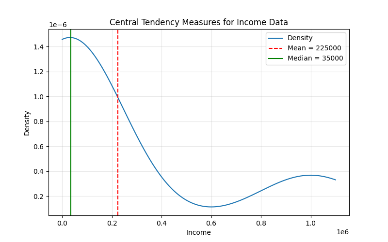
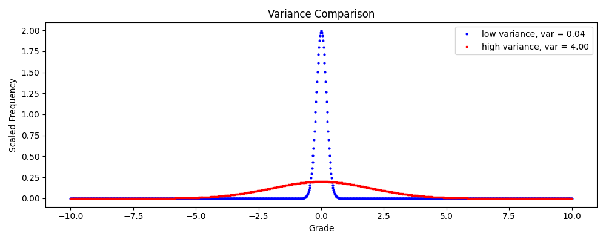
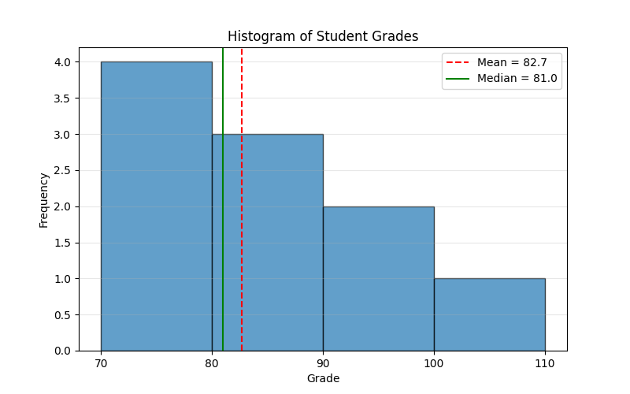
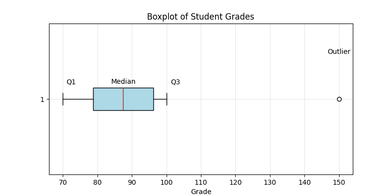
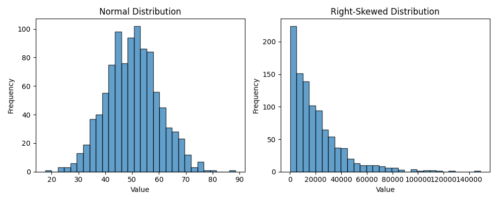
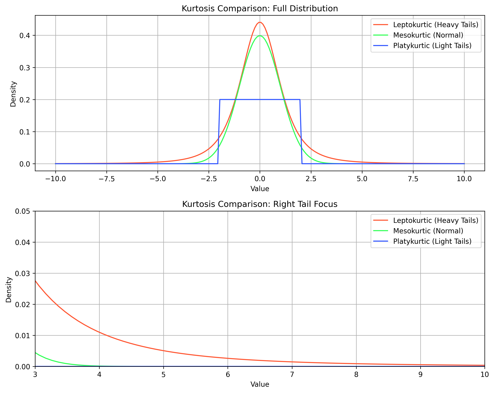

Section 1.1 Descriptive Statistics
Descriptive statistics summarize key features of a dataset, providing insights into its central tendency, dispersion, and shape. This process, known as Exploratory Data Analysis (EDA), helps identify patterns and trends before applying advanced statistical methods. Common measures include mean, median, mode, variance, standard deviation, range, quartiles, and visualizations like histograms and boxplots. These tools are essential for understanding data in fields like education, finance, and science.
Subsection 1.1.1 Measures of Central Tendency
Measures of central tendency describe the "typical" value in a dataset.
-
Mean (Average): The mean, denoted \(\mu\text{,}\) is the sum of all data points divided by their count. For a dataset \(\{x_1, x_2, \dots, x_N\}\) with \(N\) points, the mean is:\begin{equation} \mu = \frac{1}{N} \sum_{i=1}^{N} x_i\tag{1.1.1} \end{equation}where \(\sum_{i=1}^{N} x_i = x_1 + x_2 + \dots + x_N\text{.}\)Example: For student grades \(\{85, 90, 90, 95, 100\}\text{,}\) the mean is:\begin{equation*} \mu = \frac{85 + 90 + 90 + 95 + 100}{5} = \frac{460}{5} = 92 \end{equation*}However, mean of a dataset can be misleading if you have a few ouliers since mean is very senisitve to outliers. For instance, say you have a dataset of income, which is \(\{20000\text{,}\) \(30000\text{,}\) \(35000\text{,}\) \(40000\text{,}\) \(1000000\}\text{.}\) Clearly, most of the income is in the \(30\text{K}\) area, but the mean of this dataset is \(225000\text{,}\) skewed by the outlier. In this case, the median would better represents the typical value in the dataset.
-
Median: The median is the middle value in a sorted dataset, where \(50\%\) of the data lies below and above. For odd \(N\text{,}\) it’s the middle value; for even \(N\text{,}\) it’s the average of the two middle values.Example: For \(\{85, 90, 95\}\) (sorted), median = \(90\text{.}\) For \(\{85, 90, 91, 95\}\text{,}\) median \(= (90 + 91)/2 = 90.5\text{.}\) For incomes \(\{20000\text{,}\) \(30000\text{,}\) \(35000\text{,}\) \(40000\text{,}\) \(1000000\}\text{,}\) median = \(35000\text{,}\) robust to the outlier.
-
Mode: The mode is the most frequent value. A dataset may have no mode, one mode (unimodal), or multiple modes (bimodal or multimodal).Example: \(\{85, 90, 90, 95, 100\}\) has mode 90. \(\{85, 90, 90, 95, 95\}\) is bimodal \((90, 95)\text{.}\) \(\{85, 90, 95\}\) has no mode.
Comparison: Consider incomes \(\{20000\text{,}\) \(30000\text{,}\) \(35000\text{,}\) \(40000\text{,}\) \(1000000\}\text{.}\) Mean = \(225000\text{,}\) median = \(35000\text{,}\) mode = none. The median best reflects the typical income due to the outlier. See Figure 1.1.1 for a visual comparison.

Subsection 1.1.2 Measures of Dispersion
Dispersion measures how spread out data is around the central tendency.
-
Variance and Standard Deviation: Variance (\(\sigma^2\)) measures average squared deviation from the mean; standard deviation (\(\sigma\)) is its square root, in the same units as the data.For a population:\begin{equation} \sigma^2 = \frac{1}{N} \sum_{i=1}^{N} (x_i - \mu)^2,\tag{1.1.2} \end{equation}where \(\mu\) is the population (true) mean. The data collected from a polulation is called sample. From the sample we can only calculate as estimate of the corresponding population quantities. We define estimate of sample variance by keeping the same divisor \(N\) as in the true variance definitionor, define with a divisor \(N-1\text{,}\) which is called an unbiased estimate of variance.\begin{equation} s^2 = \frac{1}{N-1} \sum_{i=1}^{N} (x_i - \bar{x})^2\tag{1.1.3} \end{equation}where \(\bar{x}\) is the sample mean.\begin{equation*} \bar{x} = \frac{1}{N} \sum_{i=1}^{N}\, x_i. \end{equation*}Example: For grades \(\{85, 90, 90, 95, 100\}\text{,}\) \(\bar{x} = 92\text{.}\) Population variance:\begin{align*} \sigma^2 \amp= \frac{(85-92)^2 + (90-92)^2 + (90-92)^2 + (95-92)^2 + (100-92)^2}{5} \\ \amp = \frac{126}{5} = 25.2. \end{align*}This will give the standard deviation, \(\sigma\text{:}\)\begin{equation*} \sigma = \sqrt{\sigma^2} = \sqrt{25.2} \approx 5.0 \end{equation*}Sample variance, on the other hand, will be:\begin{equation*} s^2 = 126/4 = 31.5\text{,} \end{equation*}and sample standard deviation\begin{equation*} s \approx 5.61\text{.} \end{equation*}Figure 1.1.2 illustrated the tighter vs. wider spread for a low variance (e.g., \(\sigma = 0.04\)) vs. high variance (e.g., \(\sigma = 4.00\)).
Figure 1.1.2. Comparing low and high variance datasets. -
Range and Quartiles: Range = max - min. Quartiles divide sorted data into four parts: Q1 (25th percentile), Q2 (median, 50th), Q3 (75th). Use linear interpolation: position = \((N-1) \cdot p\text{,}\) where \(p = 0.25, 0.5, 0.75\text{.}\)Example: For grades \(\{70, 75, 80, 85, 90, 95, 100\}\text{,}\) \(N=7\text{.}\) Median \((\text{Q2}) = 85\text{.}\) \(\text{Q1} = 75\text{,}\) \(\text{Q3} = 95\text{.}\) Range \(= 100 - 70 = 30\text{.}\) \(\text{IQR} = \text{Q3} - \text{Q1} = 20\text{.}\) Outliers:\begin{equation*} \text{Below: }\ \text{Q1} - 1.5\times\text{IQR} = 45; \quad \text{ Above:}\ \text{Q3} + 1.5 \times \text{IQR} = 125. \end{equation*}These grades have no outliers.
Subsection 1.1.3 Distribution Shape
Histogram: Histograms show frequency distributions by grouping data into bins of equal size from min to a bin that includes the max data. So, if you have data from \(x_\text{min}\) to \(x_\text{max}\) with a bin size \(b\text{.}\) Then, bins will have \(x_\text{min} \le x \lt x_\text{min} + b\text{,}\) \(x_\text{min} + b \le x \lt x_\text{min} + 2b\text{,}\) \(\cdots\text{,}\) till you have exhausted all data. The last bin may extend beyond the data as in the example below.
Example: For grades \(\{70, 72, 75, 75, 80,\) \(80, 85, 90, 95, 100\}\text{,}\) with bin size \(10\) from \(70\) to \(110\text{,}\) see Table 1.1.3.
| Bin | Range | Data | Count | Frequency |
|---|---|---|---|---|
| 1 | \(70 \le x \lt 80\) | \(\{70, 72, 75, 75\}\) | 4 | 0.333 |
| 2 | \(80 \le x \lt 90\) | \(\{80, 82, 85\}\) | 3 | 0.333 |
| 3 | \(90 \le x \lt 100\) | \(\{93, 95\}\) | 2 | 0.222 |
| 4 | \(100 \le x \lt 110\) | \(\{100\}\) | 1 | 0.111 |
Many computer libraries have histogram plotting routines. For instance Figure 1.1.4 was generated from the Python program listed after it. The histogram has been decorated with the mean and median of the data also.

Example Histogram
import matplotlib.pyplot as plt
import numpy as np
data = [70, 72, 75, 75, 80, 82, 85, 93, 95, 100]
bins = [70, 80, 90, 100, 110]
freq_arr, bins_arr = np.histogram(data, bins) # returns frequency
width = bins_arr[1:] - bins_arr[:-1]
plt.figure(figsize=(8, 5))
plt.hist(data, bins=bins, edgecolor='black', alpha=0.7)
# this is just plt.bar(bins_arr[:-1], freq_arr, width)
mean = np.mean(data)
median = np.median(data)
plt.axvline(mean, color='red', linestyle='--', label=f'Mean = {mean:.1f}')
plt.axvline(median, color='green', linestyle='-', label=f'Median = {median:.1f}')
plt.xlabel('Grade')
plt.ylabel('Frequency')
plt.title('Histogram of Student Grades')
plt.xticks(bins)
plt.grid(axis='y', alpha=0.3)
plt.legend()
plt.savefig('histogram.png')
plt.show()
Boxplot: Boxplots show min, Q1, median, Q3, max (whiskers), and outliers (points beyond Q1 \(- 1.5\times \)IQR or Q3 \(+ 1.5\times\)IQR).
Example: For grades with an outlier \(\{70, 75, 80, 85, 90, 95, 100, 150\}\text{,}\) \(\text{Q1} = 77.5\text{,}\) \(\text{Q2} = 87.5\text{,}\) \(\text{Q3} = 97.5\text{,}\) \(\text{IQR} = 20\text{.}\) Outliers: ≤\(150\) is above \(\text{Q3} + 1.5*\text{IQR} = 127.5\text{.}\) See Figure 1.1.5.

Updated boxplot with annotations
import matplotlib.pyplot as plt
import numpy as np
data = [70, 75, 80, 85, 90, 95, 100, 150]
plt.figure(figsize=(8, 4))
bp = plt.boxplot(data, vert=False, patch_artist=True, boxprops=dict(facecolor='lightblue'), medianprops=dict(color='red'))
q1, median, q3 = np.percentile(data, [25, 50, 75])
plt.text(q1 - 5, 1.1, 'Q1', ha='right')
plt.text(median, 1.1, 'Median', ha='center')
plt.text(q3 + 5, 1.1, 'Q3', ha='left')
plt.text(150, 1.3, 'Outlier', ha='center')
plt.title('Boxplot of Student Grades')
plt.xlabel('Grade')
plt.grid(True, alpha=0.3)
plt.savefig('boxplot.png')
plt.show()
Skewness: Skewness tells us about the shape of the distribution, specifically if it’s "tilted" to one side. In a positively skewed distribution (right skew), the tail on the right side is longer, while in a negatively skewed distribution (left skew), the tail on the left side is longer.
Positive skew example: Imagine a dataset of household incomes: \({20000, 30000, 35000, 40000, 1000000}\text{.}\) The income of 1 million is much higher than the others, causing the data to be right-skewed. Most people earn a lower income, but a few very high incomes stretch the right side of the distribution, creating a longer right tail.
Negative skew example: Think of a set of exam scores \({50, 60, 70, 80, 90, 95}\text{.}\) If most students score high but a few perform very poorly, the data is left-skewed. The low scores create a long tail on the left side of the distribution.
See Figure 1.1.6 for a visual representation.

To help visualize the difference, here’s a Python code that generates two types of distributions: a normal (symmetrical) one and a right-skewed one. The plot will show how the shapes of these two distributions differ.
Skewness Visualization
import matplotlib.pyplot as plt
import numpy as np
from scipy.stats import norm, skewnorm
np.random.seed(42)
normal_data = np.random.normal(50, 10, 1000) # Normal distribution
skewed_data = np.random.exponential(20000, 1000) # Right-skewed distribution
fig, (ax1, ax2) = plt.subplots(1, 2, figsize=(10, 4))
# normal distribution
ax1.hist(normal_data, bins=30, edgecolor='black', alpha=0.7)
ax1.set_title('Normal Distribution')
ax1.set_xlabel('Value')
ax1.set_ylabel('Frequency')
#Plot right-skewed distribution
ax2.hist(skewed_data, bins=30, edgecolor='black', alpha=0.7)
ax2.set_title('Right-Skewed Distribution')
ax2.set_xlabel('Value')
ax2.set_ylabel('Frequency')
plt.tight_layout()
plt.savefig('skewness-comparison.png')
plt.show()
Subsection 1.1.4 Kurtosis: Checking Out the Tails
After digging into mean, median, mode, and skewness, let’s talk kurtosis. This stat zooms in on the "tailedness" of our data—how often we see wild outliers compared to a normal distribution. It’s like checking the edges of our data’s shape to see if they’re loaded with extreme values or totally chill.
Subsubsection 1.1.4.1 Types of Kurtosis
Kurtosis comes in three flavors:
- Mesokurtic: Matches a normal distribution. Not too many outliers, not too few. It’s the just-right vibe.
- Leptokurtic: Sharp peak, heavy tails. Think lots of outliers, like stock prices during a market rollercoaster.
- Platykurtic: Flatter peak, light tails. Fewer outliers, like steady daily temps.
Subsubsection 1.1.4.2 How’s It Calculated?
Kurtosis measures how much data hangs out in the tails. The formula for excess kurtosis (comparing to a normal distribution) is:
\(\text{Excess Kurtosis} = \frac{1}{N} \sum_{i=1}^{N} \left( \frac{x_i - \mu}{\sigma} \right)^4 - 3\)
Here, \(N\) is the number of data points, \(x_i\) is each data point, \(\mu\) is the mean, and \(\sigma\) is the standard deviation. Don’t stress the math—Python will handle it in a bit!
Subsubsection 1.1.4.3 Real-World Examples
Let’s connect kurtosis to mean, median, mode, and skewness:
- Leptokurtic Example: Take stock returns:
{5, 7, 8, 8, 10, 12, 12, 12, 12, 50}. That 50 is a massive outlier, bulking up the tails (like skewness, but focused on extremes). This is leptokurtic—expect some crazy swings. - Platykurtic Example: Now daily temperatures:
{30, 32, 33, 34, 35, 36, 38}. No wild outliers, just values chilling around the mean and median. This is platykurtic—nice and calm.
While skewness shows if our data’s lopsided, kurtosis tells us if outliers are stealing the show.
Subsubsection 1.1.4.4 Seeing Kurtosis in Action
Picture kurtosis with histograms (like we used for mean and skewness):
- Leptokurtic: Sharp peak, chunky tails (lots of outliers).
- Platykurtic: Flatter top, skinny tails (few outliers).
- Mesokurtic: Classic bell curve, balanced tails.
Check out this chart to see the difference:

import numpy as np
import matplotlib.pyplot as plt
from scipy.stats import kurtosis, t, norm, uniform
# Data for kurtosis calculation
stock_data = [5, 7, 8, 8, 10, 12, 12, 12, 12, 50] # Leptokurtic
temp_data = [30, 32, 33, 34, 35, 36, 38] # Platykurtic
# Calculate kurtosis
kurt_stock = kurtosis(stock_data, fisher=True)
kurt_temp = kurtosis(temp_data, fisher=True)
print(f"Stock Returns Kurtosis: {kurt_stock:.2f} (Leptokurtic)")
print(f"Temperature Kurtosis: {kurt_temp:.2f} (Platykurtic)")
# Generate data for plotting distributions
x = np.linspace(-10, 10, 200) # Wider range to show tails
# Leptokurtic: Student's t-distribution (df=3 for heavy tails)
lepto = t.pdf(x, df=3) * 1.2 # Scale for visibility
# Mesokurtic: Normal distribution
meso = norm.pdf(x)
# Platykurtic: Uniform-like distribution (approximated)
platy = uniform.pdf(x, loc=-2, scale=4) * 0.8 # Flat, light tails
# Create figure with two subplots
fig, (ax1, ax2) = plt.subplots(2, 1, figsize=(10, 8), sharex=False)
# Full distribution plot (top subplot)
ax1.plot(x, lepto, label='Leptokurtic (Heavy Tails)', color='#FF5733')
ax1.plot(x, meso, label='Mesokurtic (Normal)', color='#33FF57')
ax1.plot(x, platy, label='Platykurtic (Light Tails)', color='#3357FF')
ax1.set_title('Kurtosis Comparison: Full Distribution')
ax1.set_xlabel('Value')
ax1.set_ylabel('Density')
ax1.legend()
ax1.grid(True)
# Tail-focused plot (bottom subplot)
ax2.plot(x, lepto, label='Leptokurtic (Heavy Tails)', color='#FF5733')
ax2.plot(x, meso, label='Mesokurtic (Normal)', color='#33FF57')
ax2.plot(x, platy, label='Platykurtic (Light Tails)', color='#3357FF')
ax2.set_title('Kurtosis Comparison: Right Tail Focus')
ax2.set_xlabel('Value')
ax2.set_ylabel('Density')
ax2.set_xlim(3, 10) # Focus on right tail
ax2.set_ylim(0, 0.05) # Zoom in on low density
ax2.legend()
ax2.grid(True)
# Adjust layout and save
plt.tight_layout()
plt.savefig('kurtosis.png', dpi=300, bbox_inches='tight') # Save both subplots
plt.show()
Subsubsection 1.1.4.5 Calculating Kurtosis with Python
Since we’re all about descriptive stats, let’s compute kurtosis with Python (more tools coming up later). Here’s a script for our stock returns example:
from scipy.stats import kurtosis
import numpy as np
# Stock returns data (leptokurtic)
data = [5, 7, 8, 8, 10, 12, 12, 12, 12, 50]
# Calculate excess kurtosis
kurt = kurtosis(data, fisher=True)
print(f"Excess Kurtosis: {kurt:.2f}")
# Positive value means leptokurtic (heavy tails)!
Run this, and you’ll see a positive kurtosis, confirming big outliers in our stock returns. Try the temperature data
{30, 32, 33, 34, 35, 36, 38} for a negative kurtosis and that platykurtic vibe.Subsubsection 1.1.4.6 Why Kurtosis Matters
Kurtosis wraps up our descriptive stats crew—mean, median, mode, and skewness. It’s like a heads-up about outliers. High kurtosis (leptokurtic) yells “watch out for big swings!”—think risky stocks. Low kurtosis (platykurtic) says “smooth sailing”—like predictable weather. It’s another piece of your data’s story.
Conclusion.
In summary, descriptive statistics provide essential tools for understanding and summarizing datasets, helping to reveal underlying patterns and trends. By examining measures of central tendency (mean, median, mode), we can identify the "typical" values of a dataset, while measures of dispersion (variance, standard deviation, range, and quartiles) show how spread out the data is. Visualizations like histograms, boxplots, and density plots enhance this understanding by allowing us to visually inspect the distribution and shape of the data. As we move forward, the next section will explore the tools available for calculating these descriptive statistics, giving us the means to automate and refine these analyses in practice.